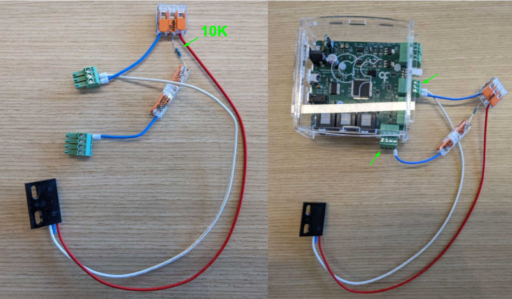

Parsing a DigitalInput Events
Assemble the following example: 
While the AnalogData is a register that sends periodic message (~1kHz), other messages are triggered by non-period events. One example is data from the digital input lines. In the Harp Behavior board, register DigitalInputState emits an event when any of the digital input lines change state. It is important to note that similar to other devices (e.g. Open-Ephys acquisition boards), the state of all lines is multiplexed into a single integer (U8), where each bit represents the state (1/0) of each line. As a result, depending on the exact transformation you want to apply to the data, you may need to use the Bitwise operators to extract the state of each individual line:
- Subscribe to the
BehaviorEventsstream. - Add a
Parse(Harp.Behavior)operator - Set
RegistertoDigitalInputStatePayload(You can also useTimestampedDigitalInputStateif you need the timestamp) - The output type of
Parsewill now change and propagate the state of all lines according to the demultiplexing logic of the register:
DigitalInputs:
bits:
None: 0x0
DIPort0: 0x1
DIPort1: 0x2
DIPort2: 0x4
DI3: 0x8
In other words, each bit of the integer value of the register represents the state of a specific line. If only DI3 is currently High, we would get:
00001000 = 8 = 0x8
Conversely, if DI3 and DIPort0 are High, we would get:
00001001 = 9 = 0x9
- To extract the state of a specific line, use the
BitwiseAndoperator andValueto the line you want to extract (e.g.DI3). To convert to aBoolean, use theGreaterThanoperator withValueset to 0. - Because the state of
DigitalInputStatechanges when ANY of the lines change, we tend to use theDistinctUntilChangedto only propagate the message if the state of the line of interest changes. - Finally, to trigger a certain behavior on a specific edge, we add a
Conditionoperator to only allowTruevalues to pass through. The behavior can easily bit inverted by adding aBitWiseNotoperator before, or inside, the condition operator.
Note
In most situations listening to the Event propagated by the register is sufficient, and prefered, to keep track of the full state history of the device. Alternatively, one could also switch to a "pooling"-like strategy by using a Timer operator that periodically asks for a Read from the register.